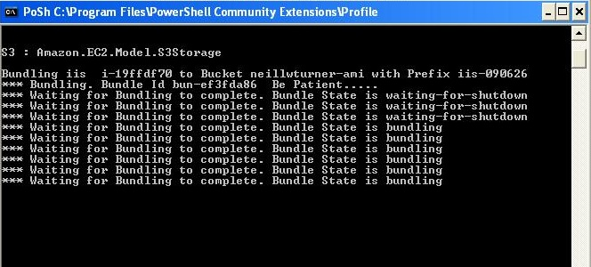
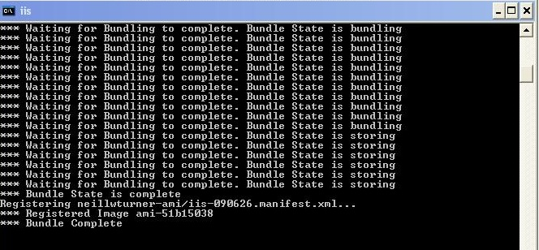
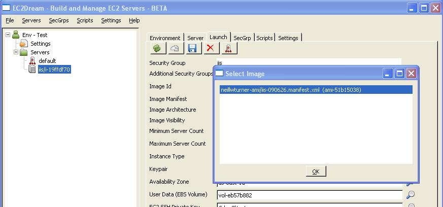
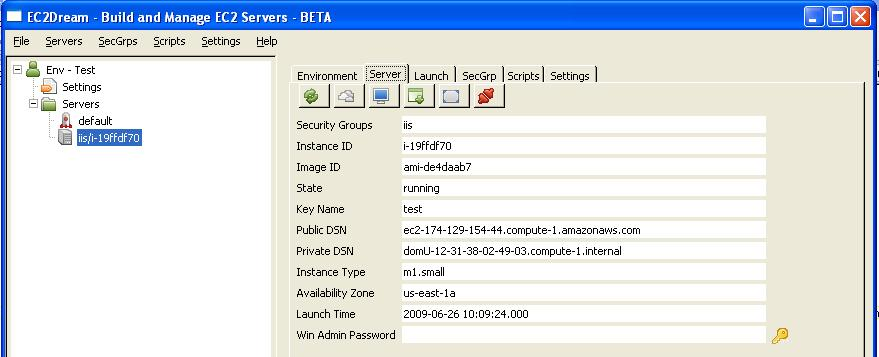
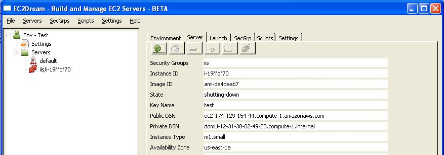

Build a Windows Application Image.
Core Concepts
The sections below outline the core concepts used in this tutorial.Script
Powershell Commands to run on a server to perform configuration.Amazon EBS Snapshot
Amazon EBS provides the ability to create point-in-time snapshots of volumes, which are persisted to Amazon S3. These snapshots can be used as the starting point for new Amazon EBS volumes, and protect data for long-term durability. The same snapshot can be used to instantiate as many volumes as you wish.Build a Base Server
1. Download Softwarea. Create a folder ps1 copy the scripts from github
b. Download Powershell 1.0 from http://www.microsoft.com/windowsserver2003/technologies/management/powershell/download.mspx choosing either the 32 bit or 64 bit version depending if you will be running a small or large Windows 2003 Server instance.
c. Download PowerShell Community Extensions from http://pscx.codeplex.com/Release/ProjectReleases.aspx?ReleaseId=2688.
d. Download 7-Zip from http://www.7-zip.org/download.htmlchoosing either the 32 bit (7z465.exe) or 64 bit version (7z465-x64.msi) depending if you will be running a small or large Windows 2003 Server instance.
2. In EC2Dream in the Server tab access the Remote Desktop of the machine by clicking on the Remote Desktop icon.
NOTE: Make sure you have a Win Admin Password specified.

3. In Remote Desktop create C:\admin
- powershell 1.0 install executable, downloaded in step 1 and install on the windows server instance.
- powershell community extensions install executable downloaded in step 1 and install on the windows server instance.
- 7-zip executables downloaded in step 1. Install 7-Zip by running 7z465.exe (32 bit servers) or 7z465-x64.msi (64 bit servers).
- Copy EC2DreamBase_ps1.zip and unzip to C:\admin. Files should be directly under C:\admin
- the private key and cert files from the Amazon EC2 to C:\admin.
4. In Remote Desktop edit the settings.ps1 file and set parameters EC2_PRIVATE_KEY, EC2_CERT, AWS_ACCESS_KEY_ID, AWS_SECRET_ACCESS_KEY correctly for your EC2 user.
5. In Remote Desktop relax the Default Execution Policy on the instance.
a. run regedit
b. go to Local Machine\Software\Microsoft\Powershell\1\ShellIds\Microsoft.Powershell
c. Add a new String key ExecutionPolicy with value Unrestricted
6. Run the EC2 Config service: C:\Program Files\Amazon\Ec2ConfigSetup\EC2ConfigServiceSettings.exe
a. In the General Tag Click the set Password to enabled to continue generating random passwords for the admin user.
NOTE: Alternatively In Remote Desktop go to Windows security and change the Administrator password so it will be known in the future.
b. In drive mapping set the E driver to the volume App so that the EBS we create in the next step will be mounted on the E drive.
7. Script base_build.ps1 is provide to add extra requirements for the base build of the server.
Create a Server Image
1.. For EBS Images create an Image by pressing on the Create Image button in the server tab.insert image
2. For Instance Store Images NOTE: Make sure you have logged off the Remote Desktop connection to the machine before doing a bundle.
a. Install Powershell and Powershell Community Extensions on Client. These should have been downloaded ealier in the the Building a Windows 2003 Server section. Also make sure .Net 2.0 or above is installed on your client PC.
b. Configure and run bundle.ps1 in the ps1 folder
NOTE: Make sure you log off remote desktop before running this script.
NOTE: It can take 20 minutes to bundle an image.

c. If bundling was sucessfully there should be a message "*** Registered Image ami-xxxxxxxxx"

3. After creating the image update the launch profile Image Id field of the Base Server so it will be used next time the Base Server is launch.

NOTE: It is always a good idea to test that bundles work by starting the server.
Terminating your Instance
NOTE: Make sure you log off remote desktop before terminating the instance.1. Click on the server Base in the server tree view.

2. In the server tab click on the terminate icon
3. Press the refresh icon

When it is shut down the status goes to